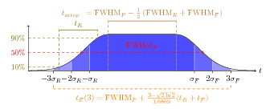
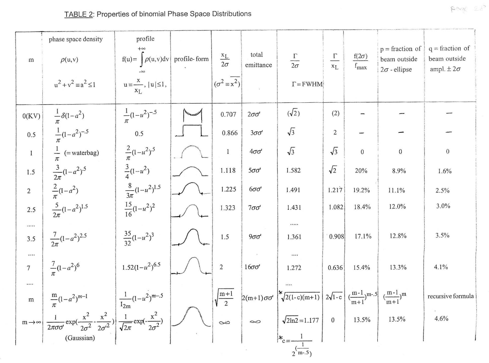
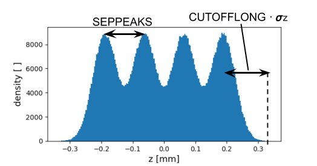

14 Distribution Command
The DISTRIBUTION command defines how particles are introduced into a simulation. A distribution has a name, a type, and a set of attributes that control its geometry, momentum spread, emission behavior, and optional correlations.
Name: DISTRIBUTION, TYPE = DISTRIBUTION_TYPE,
ATTRIBUTE1 = ...,
ATTRIBUTE2 = ...;The supported distribution types depend on whether you are looking at the legacy OPAL manual path or the current OPALX implementation.
| Type | Description |
|---|---|
FROMFILE |
Read initial particle coordinates from a user-provided text file. |
GAUSS |
Gaussian distribution in one or more dimensions. |
FLATTOP |
Hard-edge transverse distribution with flat-top time structure. |
BINOMIAL |
Binomial family controlled by one shape parameter per axis. |
GAUSSMATCHED |
Matched Gaussian distribution for cyclotron-style matching. |
MULTIGAUSS |
Train of Gaussian pulses along the longitudinal direction. |
GUNGAUSSFLATTOPTH |
Legacy shorthand for emitted FLATTOP with ASTRA. |
ASTRAFLATTOPTH |
Legacy emitted flat-top photoinjector distribution. |
| Type | Description |
|---|---|
GAUSS |
Gaussian bunch with diagonal sigma specification and optional pairwise correlations. |
MULTIVARIATEGAUSS |
Gaussian bunch defined from a full correlation array. |
FLATTOP |
Uniform transverse disk with time-dependent emission profile. |
FROMFILE |
Particle coordinates read from an external file. |
14.1 Current OPALX Scope
OPALX already has a native DISTRIBUTION implementation, but its scope is smaller than the legacy OPAL chapter. The currently supported parser-side distribution types are:
GAUSSMULTIVARIATEGAUSSFLATTOPFROMFILE
The implementation is split across three statements:
DISTRIBUTION: shape and sampling parametersEMISSIONSOURCE: source position, momentum offset, start time, and emission modelEMISSIONSOURCELIST: list of sources attached to the beam
14.1.1 Injected vs emitted in OPALX
The DISTRIBUTION statement still owns the boolean EMITTED. In addition, an EMISSIONSOURCE contributes:
R0X,R0Y,R0Z: source position offsetP0X,P0Y,P0Z: source momentum offsetT0: delayed start timeEMISSIONMODEL: currentlyNONEorASTRA
This differs from the legacy OPAL manual, where emission-model parameters are documented directly under DISTRIBUTION.
14.1.2 Common OPALX attributes
The common OPALX distribution attributes currently exposed by the parser are:
TYPEFNAMESIGMAX,SIGMAY,SIGMAZSIGMAPX,SIGMAPY,SIGMAPZCORRCORRX,CORRY,CORRZ,CORRTCUTOFFX,CUTOFFY,CUTOFFLONGCUTOFFPX,CUTOFFPY,CUTOFFPZSIGMATTPULSEFWHM,TRISE,TFALLFTOSCAMPLITUDE,FTOSCPERIODSEMITTEDNPARTDIST
NPARTDIST is an OPALX-specific particle-count hook for the distribution itself. If it is not positive, the distribution does not enforce its own count.
14.1.3 GAUSS
The OPALX GAUSS sampler supports:
- diagonal RMS widths via
SIGMAX,SIGMAY,SIGMAZ - diagonal RMS momentum widths via
SIGMAPX,SIGMAPY,SIGMAPZ - cutoffs via
CUTOFFX,CUTOFFY,CUTOFFLONG,CUTOFFPX,CUTOFFPY,CUTOFFPZ - pairwise transport-style correlations via
CORRX,CORRY,CORRZ,CORRT
In the current implementation, GAUSS only supports EMISSIONMODEL=NONE. If a different emission model is attached to the EMISSIONSOURCE, OPALX throws.
Delayed one-shot emission through T0 > 0 is supported.
14.1.4 MULTIVARIATEGAUSS
MULTIVARIATEGAUSS is the full-covariance Gaussian path. It uses the CORR array instead of only the named pairwise correlation scalars and is the natural OPALX counterpart when a full coupled Gaussian specification is needed.
14.1.5 FLATTOP
FLATTOP is the OPALX time-dependent emission sampler. It uses:
SIGMAX,SIGMAYfor the transverse ellipseTPULSEFWHM,TRISE,TFALLfor the pulse shapeCUTOFFLONGfor the rise/fall truncationFTOSCAMPLITUDE,FTOSCPERIODSfor oscillations on the flat top
Its emitted particles are born on a transverse uniform disk and are advanced with per-particle fractional timesteps during emission.
For FLATTOP, the supported emission models are the EMISSIONSOURCE models:
NONEASTRA
14.1.6 FROMFILE
FROMFILE reads 6D particle coordinates from FNAME.
One important OPALX runtime rule is enforced in tracking:
FROMFILEcarries absolute particle momenta from the file- therefore it must not be combined with
PC,ENERGY, orGAMMAonBEAM
For all other OPALX distribution types, the beam energy must be set on the BEAM command.
14.1.7 Not currently part of OPALX DISTRIBUTION
The following legacy distribution features are not part of the current OPALX distribution implementation documented from source here:
BINOMIALGAUSSMATCHEDMULTIGAUSSGUNGAUSSFLATTOPTHASTRAFLATTOPTHNONEQUIL
14.2 Units
Lengths are given in meters and times in seconds. Momentum input units depend on INPUTMOUNITS.
| Attribute | Value | Meaning |
|---|---|---|
INPUTMOUNITS |
NONE |
Use normalized momentum components beta_x gamma, beta_y gamma, beta_z gamma. This is the OPAL-T default. |
INPUTMOUNITS |
EVOVERC |
Use momenta in eV/c. This is the OPAL-cycl default. |
14.2.1 Momentum unit conversion
To convert from normalized momentum to transverse angle in mrad, use \[ (\beta\gamma)_{\mathrm{ref}} = \frac{P}{m_0 c} = \frac{Pc}{m_0 c^2}, \] and \[ P_x[\mathrm{mrad}] = 1000 \times \frac{\beta_x\gamma}{(\beta\gamma)_{\mathrm{ref}}}. \]
To convert from eV/c to dimensionless normalized momentum, \[
\beta_x \gamma = \frac{P_x[\mathrm{eV}/c]}{m_0 c}
= \frac{P_x[\mathrm{eV}/c]\,c}{m_0 c^2}.
\]
The same relations apply to the y and z components.
14.3 General Distribution Attributes
The first major distinction is whether the distribution is injected at the start of the simulation or emitted over time.
| Attribute | Value | Meaning |
|---|---|---|
EMITTED |
FALSE |
Inject the full distribution at the start of the simulation. This is the default. |
EMITTED |
TRUE |
Emit the particles over time. This is currently an OPAL-T mode. |
For injected distributions, the longitudinal coordinate is z in meters. For emitted distributions, the longitudinal coordinate is t in seconds.
14.3.1 Universal Attributes
These attributes apply to all distribution types:
| Attribute | Default | Meaning |
|---|---|---|
WRITETOFILE |
FALSE |
Write the generated initial distribution to a text file. |
SCALABLE |
FALSE |
Make generation scalable with the number of MPI ranks. |
WEIGHT |
1.0 |
Relative weight when used in a distribution list. |
NBIN |
0 |
Number of energy bins. |
SBIN |
100 |
Sample bins per energy bin. |
XMULT, YMULT |
1.0 |
Scale transverse positions after generation. |
PXMULT, PYMULT, PZMULT |
1.0 |
Scale momentum components after generation. |
OFFSETX, OFFSETY |
0.0 |
Shift average transverse position. |
OFFSETPX, OFFSETPY, OFFSETPZ |
0.0 |
Shift average momentum. |
ID1, ID2 |
zero 6-vector | Tracer particles written to track_orbit.dat in OPAL-cycl. |
14.3.2 Injected Distribution Attributes
| Attribute | Default | Meaning |
|---|---|---|
ZMULT |
1.0 |
Scale longitudinal position after generation. |
OFFSETZ |
0.0 |
Shift average longitudinal position. |
14.3.3 Emitted Distribution Attributes
| Attribute | Default | Meaning |
|---|---|---|
TMULT |
1.0 |
Scale emission time after generation. |
OFFSETT |
0.0 |
Delay emission relative to the reference particle. |
EMISSIONSTEPS |
1 |
Number of timesteps used during emission. |
EMISSIONMODEL |
NONE |
Emission model applied at the cathode. |
14.4 Distribution Types
14.4.1 FROMFILE
FROMFILE reads coordinates from an external text file.
Name: DISTRIBUTION, TYPE=FROMFILE,
FNAME="text file name";The type-specific attribute is:
| Attribute | Meaning |
|---|---|
FNAME |
File name containing the particle coordinates. |
For an injected FROMFILE distribution, the file format is:
N
x1 px1 y1 py1 z1 pz1
x2 px2 y2 py2 z2 pz2
...
xN pxN yN pyN zN pzNFor an emitted FROMFILE distribution, z is replaced by t:
N
x1 px1 y1 py1 t1 pz1
x2 px2 y2 py2 t2 pz2
...
xN pxN yN pyN tN pzNThe emitted case is internally shifted so that emission starts from negative time and particles appear as the simulation clock advances.
When using FROMFILE, the particle count must match the BEAM NPART expectation, and the mean momentum in the file must be consistent with the beam energy settings.
14.4.2 GAUSS
GAUSS creates a six-dimensional Gaussian bunch. The core attributes are:
| Attribute | Meaning |
|---|---|
SIGMAX, SIGMAY |
RMS transverse widths. |
SIGMAR |
RMS radial width; overrides SIGMAX and SIGMAY if nonzero. |
SIGMAZ, SIGMAT |
RMS bunch length in z or t. SIGMAZ overrides SIGMAT. |
SIGMAPX, SIGMAPY, SIGMAPZ |
RMS momentum spreads. |
CUTOFFX, CUTOFFY, CUTOFFR, CUTOFFLONG, CUTOFFPX, CUTOFFPY, CUTOFFPZ |
Cutoffs expressed in units of the corresponding sigma. |
Example:
Name: DISTRIBUTION, TYPE = GAUSS,
SIGMAX = 0.001,
SIGMAY = 0.003,
SIGMAZ = 0.002,
SIGMAPX = 0.0,
SIGMAPY = 0.0,
SIGMAPZ = 0.0,
CUTOFFX = 2.0,
CUTOFFY = 2.0,
CUTOFFLONG = 4.0,
OFFSETX = 0.001,
OFFSETY = -0.002,
OFFSETZ = 0.01,
OFFSETPZ = 1200.0;GAUSS for photoinjectors
For emitted beams, GAUSS can also produce a half-Gaussian rise, flat-top, half-Gaussian fall time profile. The key extra attributes are:
| Attribute | Meaning |
|---|---|
TPULSEFWHM |
Full-width-at-half-maximum pulse length. |
TRISE |
Rise time. Overrides SIGMAT. |
TFALL |
Fall time. Overrides SIGMAT. |
FTOSCAMPLITUDE |
Oscillation amplitude on the flat top, in percent. |
FTOSCPERIODS |
Number of oscillation periods across the flat top. |

GAUSS and FLATTOP time profile with half-Gaussian edges and optional flat-top oscillations.
The rise and fall parameters correspond to \[ \mathrm{TRISE} = 1.6869\,\sigma_R, \qquad \mathrm{TFALL} = 1.6869\,\sigma_F, \] and the pulse FWHM is \[ \mathrm{TPULSEFWHM} = t_{\mathrm{flattop}} + \sqrt{2\ln 2}(\sigma_R + \sigma_F). \]
The total emission time depends on CUTOFFLONG: \[
t_E = \mathrm{TPULSEFWHM}
+ \frac{\mathrm{CUTOFFLONG} - \sqrt{2 \ln 2}}{1.6869}
(\mathrm{TRISE} + \mathrm{TFALL}).
\]
Correlations for GAUSS
The Gaussian generator also supports experimental correlations. They can be given either as a compact array R or through named coefficients such as:
CORRX,CORRY,CORRZR51,R52R61,R62
In the four-dimensional (x, p_x, z, p_z) subspace, the correlation matrix is \[
\sigma =
\begin{bmatrix}
1 & c_x & R_{51} & R_{61} \\
c_x & 1 & R_{52} & R_{62} \\
R_{51} & R_{52} & 1 & c_t \\
R_{61} & R_{62} & c_t & 1
\end{bmatrix}.
\]
The implementation constructs correlated samples from the Cholesky factorization of this matrix. This feature is experimental and only documented for Gaussian distributions.
14.4.3 FLATTOP
FLATTOP defines hard-edge distributions and is commonly used to model laser profiles in photoinjectors.
Injected FLATTOP
For injected beams, the distribution is a uniformly filled ellipse transversely and uniform in z.
| Attribute | Meaning |
|---|---|
SIGMAX, SIGMAY |
Hard-edge widths. |
SIGMAR |
Radial hard-edge width; overrides SIGMAX and SIGMAY. |
SIGMAZ |
Hard-edge bunch length. |
Emitted FLATTOP
For emitted beams, FLATTOP uses the same longitudinal pulse-shape parameters as the photoinjector-style GAUSS case.
Additional attributes include:
| Attribute | Meaning |
|---|---|
SIGMAX, SIGMAY, SIGMAR |
Hard-edge transverse beam size. |
SIGMAT, TPULSEFWHM, TRISE, TFALL |
Time-profile parameters. |
FTOSCAMPLITUDE, FTOSCPERIODS |
Oscillations on the flat top. |
LASERPROFFN, IMAGENAME, INTENSITYCUT |
Laser-profile image input. |
FLIPX, FLIPY, ROTATE90, ROTATE180, ROTATE270 |
Laser-image transforms. |
Example:
Dist: DISTRIBUTION, TYPE = FLATTOP,
SIGMAX = 0.001,
SIGMAY = 0.002,
TRISE = 0.5e-12,
TFALL = 0.5e-12,
TPULSEFWHM = 10.0e-12,
CUTOFFLONG = 4.0,
NBIN = 5,
EMISSIONSTEPS = 100,
EMISSIONMODEL = ASTRA,
EKIN = 0.5,
EMITTED = TRUE;The legacy manual also describes a laser-image driven transverse sampling path through LASERPROFFN, but explicitly marks it as under development.
GUNGAUSSFLATTOPTH and ASTRAFLATTOPTH
These are legacy shorthands for emitted flat-top photoinjector distributions. Both correspond to FLATTOP-style emission. GUNGAUSSFLATTOPTH automatically enables EMITTED=TRUE and EMISSIONMODEL=ASTRA, while ASTRAFLATTOPTH follows the same idea with a slightly different legacy longitudinal profile generator.
14.4.4 BINOMIAL
BINOMIAL generates a family of distributions governed by one parameter m per axis. Changing m moves continuously from hollow-shell and flat-profile shapes toward Gaussian-like limits Joho (1980).

The key shape parameters are:
| Attribute | Meaning |
|---|---|
MX |
Binomial parameter in x. |
MY |
Binomial parameter in y. |
MT, MZ |
Binomial parameter in the longitudinal direction. MZ is the same as MT. |
The phase-space widths are still set through the usual SIGMAX, SIGMAPX, CORRX, and corresponding y and z/t variants.
For one plane, \[ \epsilon_x = \sigma_x \sigma_{x'} \cos\!\left(\arcsin(\sigma_{12})\right), \] with the corresponding Twiss relations \[ \beta_x = \frac{\sigma_x^2}{\epsilon_x}, \qquad \gamma_x = \frac{\sigma_{x'}^2}{\epsilon_x}, \qquad \alpha_x = -\sigma_{12}\sqrt{\beta_x \gamma_x}. \]
Example:
Dist: DISTRIBUTION, TYPE = BINOMIAL,
SIGMAX = 2.15e-03,
SIGMAPX = 1E-6,
CORRX = 0.0,
MX = 0.01,
SIGMAY = 0.50*23.e-03,
SIGMAPY = 28.0,
CORRY = 0.5,
MY = 990.0,
SIGMAT = 1.0e-1,
SIGMAPT = 11.96,
CORRT = -0.5,
MT = 2.0;14.4.5 GAUSSMATCHED
GAUSSMATCHED constructs a matched Gaussian distribution, intended for cyclotron-style matched injection. The main control parameters are:
| Attribute | Meaning |
|---|---|
DENERGY |
Energy step size for the closed-orbit finder. |
EX, EY, ET |
Projected normalized emittances. |
NSTEPS, NSECTORS |
Closed-orbit integration controls. |
SECTOR |
Match using one sector or the full ring. |
ORDERMAPS |
Order used in the field expansion. |
RGUESS |
Initial radius guess. |
RESIDUUM |
Convergence target. |
MAXSTEPSCO, MAXSTEPSSI |
Iteration limits for the closed-orbit and matching loops. |
The legacy manual explicitly notes one limitation: trim-coil field maps are not included in this matched-distribution construction.
14.4.6 MULTIGAUSS
MULTIGAUSS models a train of Gaussian pulses. Transversely it uses a uniform elliptical profile, while longitudinally it generates NPEAKS equally spaced Gaussian peaks Power and Jing (2009).
Key attributes are:
| Attribute | Meaning |
|---|---|
SIGMAX, SIGMAY, SIGMAR |
Transverse size. |
SIGMAZ, SIGMAT |
RMS length of each Gaussian pulse. |
SEPPEAKS |
Peak-to-peak separation. |
NPEAKS |
Number of Gaussian pulses. |
CUTOFFLONG |
Longitudinal cutoff relative to the first and last pulse. |
SIGMAPX, SIGMAPY, SIGMAPZ |
Momentum spread for injected beams. |
CUTOFFPX, CUTOFFPY, CUTOFFPZ |
Momentum cutoffs for injected beams. |
When emitted, the momentum is assigned by the selected emission model. When injected, the momentum components are sampled from normal distributions.

MULTIGAUSS bunch with several separated longitudinal peaks.
Example:
Dist: DISTRIBUTION, TYPE = MULTIGAUSS,
SIGMAPX = 1e-2, SIGMAPY = 1e-2, SIGMAPZ = 1e-2,
CUTOFFPX = 4.0, CUTOFFPY = 4.0, CUTOFFPZ = 4.0,
SIGMAR = 340e-6,
SIGMAZ = 90e-6 / 2.355,
CUTOFFLONG = 4.0,
SEPPEAKS = 126e-6,
NPEAKS = 4,
EMITTED = FALSE;14.5 Emission Models
Emission models apply only to emitted distributions and determine how thermal energy and cathode physics are translated into initial particle momentum.
14.5.1 NONE
NONE is the default OPAL-T emission model. It adds a user-specified kinetic energy EKIN to the longitudinal momentum only.
| Attribute | Default | Meaning |
|---|---|---|
EKIN |
1.0 eV |
Thermal energy added during emission. |
This model is useful for transversely cold emitted beams. If EKIN=0, emitted particles may fail to drift off the cathode cleanly.
14.5.2 ASTRA
ASTRA uses the same EKIN parameter but distributes the momentum three-dimensionally: \[
p_{\mathrm{total}} = \sqrt{\left(\frac{\mathrm{EKIN}}{mc^2}+1\right)^2 - 1},
\] \[
p_x = p_{\mathrm{total}}\sin(\theta)\cos(\phi),\quad
p_y = p_{\mathrm{total}}\sin(\theta)\sin(\phi),\quad
p_z = p_{\mathrm{total}}|\cos(\theta)|.
\]
Here theta is random on [0, pi], and \[
\phi = 2 \arccos\!\left(\sqrt{x}\right),
\] with x a uniform random number on [0, 1].
14.5.3 NONEQUIL
NONEQUIL is a more physical photoemission model for metal cathodes and materials such as CsTe Flöttmann (1997) Clendenin et al. (2000) Dowell and Schmerge (2009).
Its additional parameters are:
| Attribute | Default | Meaning |
|---|---|---|
ELASER |
4.86 eV |
Drive-laser photon energy. |
W |
4.31 eV |
Cathode work function. |
FE |
7.0 eV |
Fermi energy. |
CATHTEMP |
300 K |
Cathode temperature. |
Example:
Dist: DISTRIBUTION, TYPE = GAUSS,
SIGMAX = 0.001,
SIGMAY = 0.002,
TRISE = 1.0e-12,
TFALL = 1.0e-12,
TPULSEFWHM = 15.0e-12,
CUTOFFLONG = 3.0,
NBIN = 10,
EMISSIONSTEPS = 100,
EMISSIONMODEL = NONEQUIL,
ELASER = 6.48,
W = 4.1,
FE = 7.0,
CATHTEMP = 325,
EMITTED = TRUE;14.6 Distribution List
The RUN command can accept either a single distribution or a list:
RUN, METHOD = "PARALLEL-T",
BEAM = beam_name,
FIELDSOLVER = field_solver_name,
DISTRIBUTION = DIST1;or
RUN, METHOD = "PARALLEL-T",
BEAM = beam_name,
FIELDSOLVER = field_solver_name,
DISTRIBUTION = {DIST1, DIST2, DIST3};In a distribution list:
- the first entry is the master distribution
- all other distributions inherit its
EMITTEDor injected mode - the total number of particles is still controlled by the
BEAMcommand - per-distribution particle counts are apportioned through
WEIGHT
FROMFILE is the special case: its particle count comes from the file rather than from BEAM and WEIGHT.